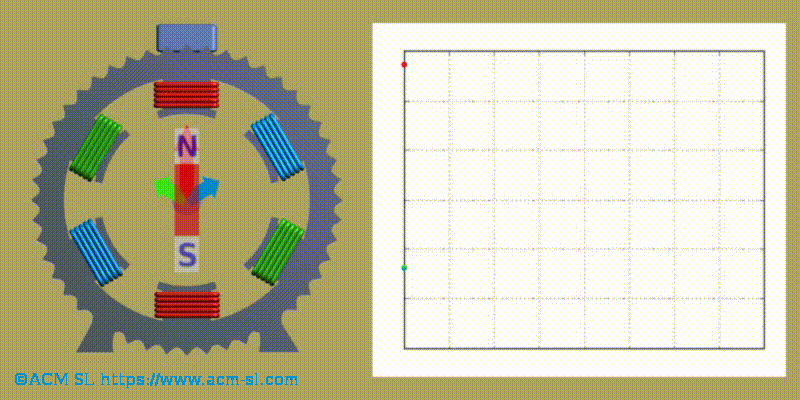

Pour comprendre le fonctionnement d'une machine à induction, il est nécessaire de se rappeler les concepts suivants:
1.Les aimants permanents interagissent entre eux: s'ils sont abandonnés dans un milieu sans frottement mécanique, ils finissent ensemble. La façon dont cette unité est produite indique qu'ils ont une asymétrie, que nous associons à leurs «pôles magnétiques» de sorte que les pôles d'un même signe se repoussent et que ceux qui sont de signes différents s'attirent. La position "stable" mentionnée ci-dessus est avec les pôles opposés de chaque aimant ensemble.
2.Loi de Lenz: une charge électrique qui se déplace génère un champ magnétique. Par exemple, un courant passant à travers un fil électrique crée un champ magnétique. et, par conséquent, interagit avec des aimants permanents.
3.En supposant que nous ayons un circuit électrique «fermé» (physiquement, ce qui implique une surface fermée), si le champ magnétique qui le traverse varie dans le temps, des courants électriques sont créés dans ledit circuit qui tentent de contrecarrer ledit changement de champ magnétique. (Induction électromagnétique). L'interaction entre ces deux champs magnétiques (celui provoqué de l'extérieur et la résultante des courants induits dans le circuit électrique) peut engendrer des forces mécaniques.
Dans les machines à induction (asynchrones) il n'y a pas d'aimants permanents, mais il y a deux groupes de circuits électriques, construits comme enroulements: l'un (le stator) est fixé au boîtier de la machine et l'autre (le rotor) sur une structure cylindrique, qui est situé sur l'axe de symétrie du stator, et qui est supporté sur le boîtier par des roulements (de sorte que le frottement est réduit au minimum), de manière à pouvoir tourner.
L'image animée suivante montre la disposition des enroulements du stator (un pour chaque phase) et leur disposition physique. Chaque couleur montre la paire d'enroulements, symétrique, qui sont connectés en série à chacune des phases de le réseau. Avec cette disposition, et les alimentant avec des signaux triphasés décalés entre eux de 120º (électriques), le résultat final est comme avoir un aimant permanent qui tourne à une vitesse correspondant à la fréquence du réseau triphasé.

Si nous insérons au centre de la figure le cylindre avec l'enroulement du rotor court-circuité, cela aura une interaction avec le champ magnétique variable généré par le stator.
Cette interaction se traduira par des courants électriques qui circuleront à travers l'enroulement du rotor, et par des efforts mécaniques sur l'arbre du rotor.
1.Si l'enroulement du rotor est court-circuité et l'arbre du rotor peut tourner librement, l'évolution de ce système électromécanique atteindra une situation stable dans laquelle l'axe du rotor tournera à la vitesse de rotation de l'aimant virtuel généré par le stator. Cette vitesse est appelée «vitesse de synchronisme».
2.Si l'enroulement du rotor est ouvert, nous aurons un transformateur, et la tension terminale de l'enroulement du rotor aura la fréquence correspondant à la rotation de l'aimant virtuel créé par le stator, et son amplitude dépendra du rapport des spires entre les enroulements du stator et rotor.
3.Si l'enroulement du rotor est court-circuité et son arbre est freiné mécaniquement, il tournera avec une vitesse qui n'atteindra pas la vitesse de synchronisme, et des courants apparaîtront dans l'enroulement du rotor avec une fréquence et une amplitude qui complèteront le flux magnétique créé par le stator. C'est le fonctionnement en tant que moteur.
4.Si l'enroulement du rotor court-circuite et que son axe est forcé de tourner, par un dispositif externe, dans le même sens de rotation que l'aimant virtuel créé par le stator, et de telle sorte que la vitesse de rotation dépasse celle du synchronisme, alors, le couple mécanique nécessaire pour maintenir ce virage sera transformé en courants qui vont «s'écouler» du stator vers le réseau électrique. C'est le fonctionnement en tant que générateur.
Le sens de rotation de l'aimant virtuel généré par l'enroulement du stator dépend de la connexion des phases dans un réseau triphasé: si la connexion est telle que représentée sur l'image précédente (phase R à enroulement rouge, phase S à enroulement bleu et phase T à enroulement vert), le virage sera comme indiqué dans la même image. Cependant, si la connexion est: Faser R à l'enroulement rouge, la phase S à l'enroulement vert et la phase T à l'enroulement bleu, l'aimant virtuel tournera dans la direction opposée à celle présentée.
Le concept de «paire de pôles magnétiques» est utilisé pour l'ensemble des deux enroulements connectés à la même phase et disposés comme indiqué sur la figure. Il y a des machines qui ont plus d'un pôle magnétique par phase du réseau. La vitesse de rotation de l'aimant virtuel sera proportionnellement inférieure au nombre de paires de pôles de la machine.
Ainsi, la vitesse de synchronisme est proportionnelle à la fréquence du réseau triphasé avec lequel le stator est alimenté divisé par le nombre de paires de pôles.
Dans Javier Mederos https://www.youtube.com/watch?v=a0hihBGMmxU vous pouvez accéder à une vidéo avec des détails supplémentaires sur la création du champ magnétique dans une machine asynchrone et le couple mécanique dans le rotor (en espagnol).
NOTE TRÈS IMPORTANT
Les machines asynchrones, n'ayant pas des aimants permanents, doivent être connectées à un réseau électrique existant, afin de créer le champ magnétique qui est la base de son fonctionnement, à travers l'enroulement du stator. Par conséquent, ils ne peuvent pas être utilisés dans les éoliennes isolées d'un réseau électrique.